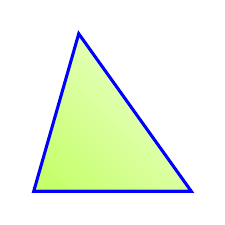
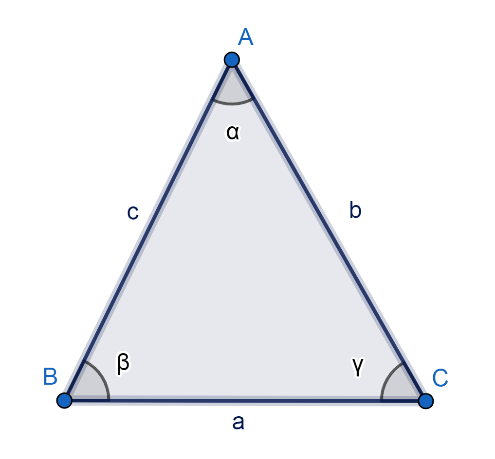
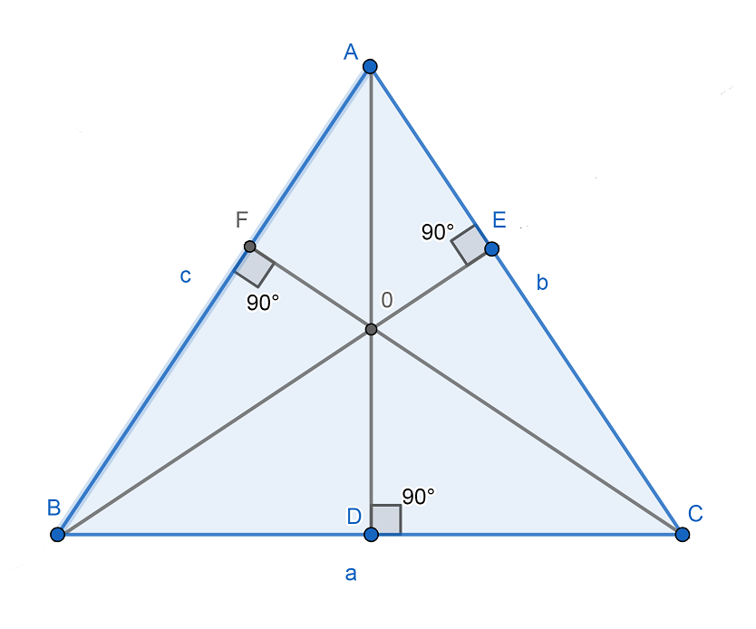

Acutángulo
Un triángulo acut&aangulo es un tipo de triángulo en el cual todos sus ángulos internos son agudos, es decir, tienen una medida menor a 90 grados. Esto implica que ninguno de los ángulos del triángulo es un ángulo recto (90 grados) o un ángulo obtuso (mayor a 90 grados).

Características principales de un triángulo acutángulo:
- Ángulos internos: Los tres ángulos internos de un triángulo acutángulo tienen medidas menores a 90 grados. La suma de los tres ángulos siempre será igual a 180 grados.
- Lados: Los lados de un triángulo acutángulo pueden tener longitudes diferentes. Dependiendo de las medidas de los ángulos y los lados, los triángulos acutángulos pueden clasificarse en diferentes tipos, como equiláteros (todos los lados tienen la misma longitud), isósceles (dos lados tienen la misma longitud) o escalenos (todos los lados tienen longitudes diferentes).

- Propiedades trigonométricas: Los triángulos acutángulos son especialmente importantes en trigonometría debido a sus propiedades. En un triángulo acutángulo, la función seno, coseno y tangente de los ángulos pueden tener valores positivos y están definidos para todos los ángulos agudos.
- Alturas: En un triángulo acutángulo, las alturas correspondientes a cada uno de los lados caen dentro del triángulo, es decir, no se extienden más allá de los lados.

Es importante destacar que un triángulo acutángulo es solo una de las clasificaciones posibles para los triángulos según sus ángulos. Los otros dos tipos principales son el triángulo rectángulo (con un ángulo recto) y el triángulo obtusángulo (con un ángulo obtuso).